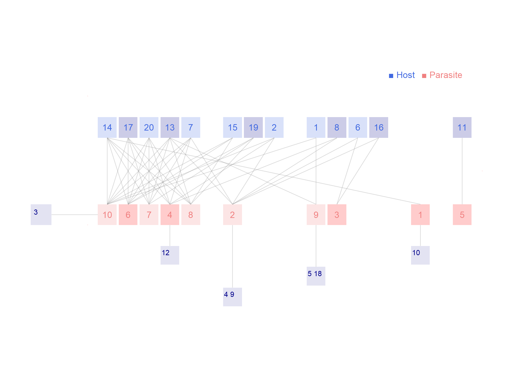

Network: RA_HP_038

Host 1 Amphipsylla.rossica, 2 Amphipsylla.schelkovnikovi, 3 Callopsylla.caspia, 4 Ceratophyllus.sciurorum, 5 Ctenophthalmus.bogatschevi, 6 Ctenophthalmus.proximus, 7 Ctenophthalmus.secundus, 8 Leptopsylla.taschenbergi, 9 Megabothris.turbidus, 10 Mesopsylla.apscheronica, 11 Myoxopsylla.jordani, 12 Neopsylla.pleskei, 13 Nosopsyllus.consimilis, 14 Nosopsyllus.iranus, 15 Nosopsyllus.laeviceps, 16 Nosopsyllus.mokrzeckyi, 17 Rhadinopsylla.ucrainica, 18 Stenoponia.ivanovi, 19 Stenoponia.tripectinata, 20Xenopsylla.conformis
Parasite
1 Allactaga elater, 2 Apodemus fulvipectus, 3 Arvicola terrestris, 4 Cricetulus migratorius, 5 Dryomys nitedula, 6 Meriones libycus, 7 Meriones persicus, 8 Meriones tristrami, 9 Microtus arvalis, 10Microtus socialis
Hadfield JD, Krasnov BR, Poulin R, Shinichi N (2013) A tale of two phylogenies: comparative analyses of ecological interactions. The American Naturalist 183(2): 174-187 Southwestern Azerbajan